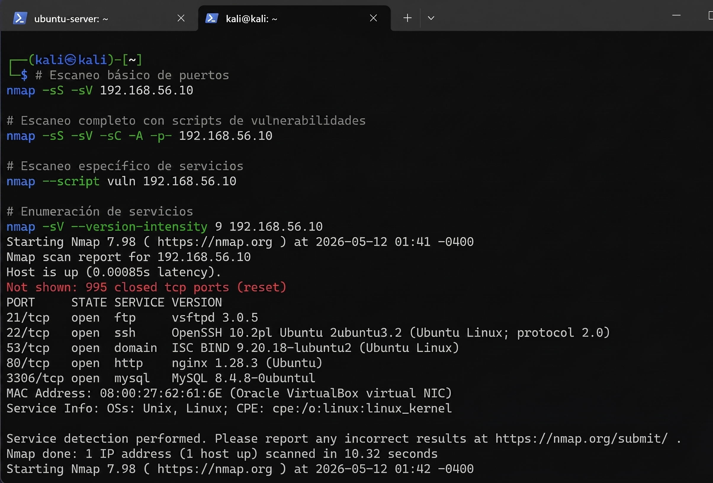

Red Team vs Blue Team

Este proyecto consistió en la implementación de un laboratorio de ciberseguridad Red Team vs Blue Team utilizando máquinas virtuales con Kali Linux y Ubuntu Server. El objetivo fue simular un entorno controlado de ataque y defensa, donde se configuraron servicios vulnerables como SSH, FTP, DNS, HTTP y MySQL para realizar pruebas de reconocimiento, enumeración y análisis de vulnerabilidades.
Desde el enfoque Red Team se utilizaron herramientas como Nmap, Hydra, Dirb y Dig para identificar puertos abiertos, servicios activos, configuraciones inseguras y posibles vectores de ataque. Posteriormente, desde el enfoque Blue Team, se aplicaron medidas defensivas como reglas de firewall con iptables, Fail2ban, hardening de SSH y monitoreo de logs para reducir la superficie de ataque.
El proyecto permitió comparar el estado inicial del servidor vulnerable contra el estado posterior al hardening, demostrando cómo una correcta configuración de servicios, el monitoreo constante y la aplicación de controles defensivos fortalecen la seguridad de una infraestructura Linux.
Resultados obtenidos
- Configuración de un entorno virtualizado para pruebas de ciberseguridad.
- Implementación de una máquina atacante con Kali Linux y un servidor vulnerable con Ubuntu Server.
- Identificación de servicios expuestos mediante escaneo y enumeración con Nmap.
- Simulación de ataques controlados, incluyendo enumeración y fuerza bruta.
- Aplicación de medidas defensivas mediante firewall, Fail2ban y hardening de SSH.
- Comparación del estado de seguridad antes y después de aplicar controles defensivos.